Natalie,
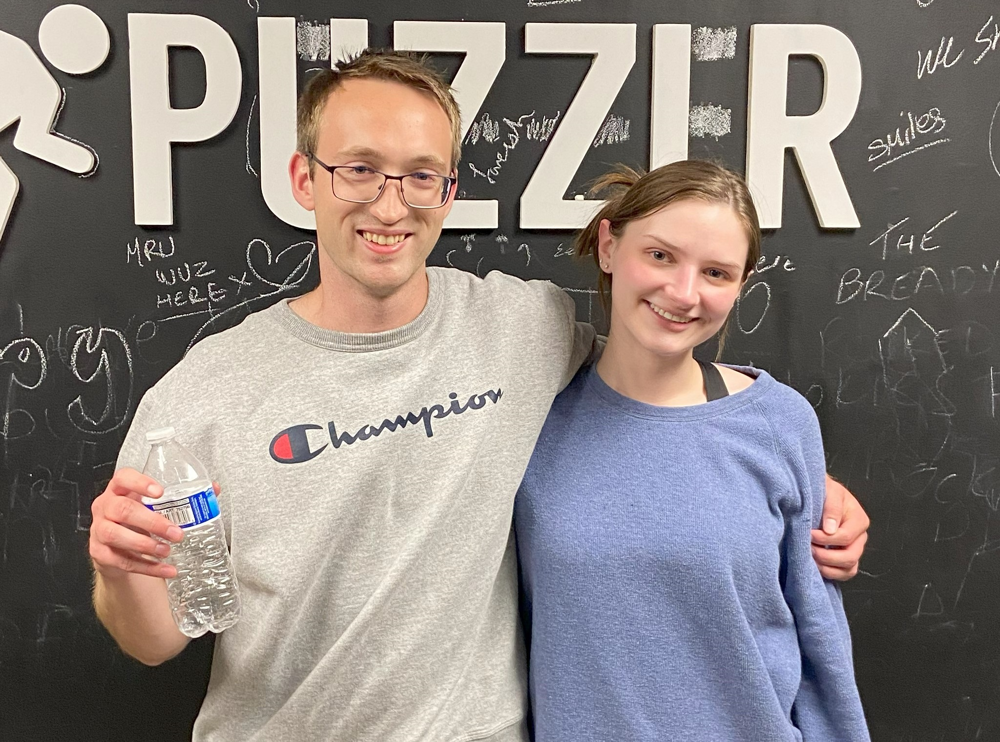
This is the culmination of my computer science degree at Virginia Tech. This is actually the
final for my class. They have to make this website in your honor. And no, I didn't use ChatGPT.
I never should have tried to force a romantic relationship with you. I completely messed up. We've been through a lot.
I had no right, obligation, or entitlement to anything. And because I wanted it so bad I hurt you. I made our
relationship about what I wanted and disregarded what you wanted. Nobody has the right to do that. Relationships should
be natural and organic. I realize now that I was doing the opposite, and I am truly sorry.
I expect that you've lost trust in me. I understand. If you want to walk away now, you can (and probably should.) If you don't, I
would like to be friends in the future, but you should probably put me in the backburner and focus on more important and happy things.
I fell hard for you. You showed me what it was like to be happy and feel loved. And I am very thankful for what we did have. I hope I was able to
make you feel that way sometimes, too. You will be happy and successful, I promise. If you ever need reassurance, you can scroll to our
past texts and look at one of the many paragraphs I've written about you. I'll never take any of it back.
You deserve so much better, especially after what you've been through and who you are. It's not your fault, it's not "men's" fault,
it's mine. I'm a hopeless romantic. And honestly, at this moment (,) I probably still am in love with you.
But sometimes, when you really want the best for someone, you've got to let them go.
I included a song at the bottom of the page and the lyrics are almost exactly how I feel. I listened to it a lot last semester;
it reminds me of you. Dan Fogelberg is a great, underrated artist. Maybe, like in the song, we will try again some day. But for
now, you and I both ought to focus on getting past this. If you actually want to try this relationship thing out now, I would too.
But only if you really want it.
I hope you aren't too affected by all this. I should have just said this here instead of texting you a drama novel. I blame Lacy, maybe if she
showed me more love I wouldn't have desired it so much. Anyway, good luck with everything. I hope you don't think of me as such a stupid slut sack now.
Whatever happens, I will always be here for you.
Love,
Math Nerd
 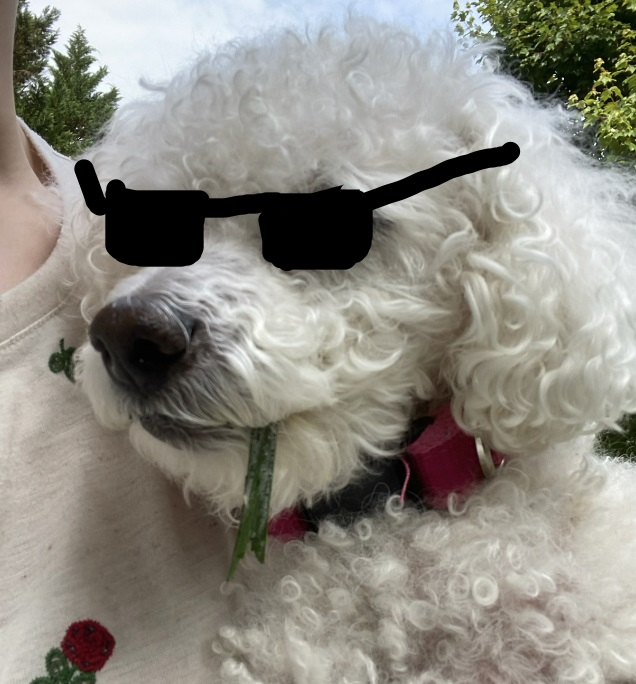
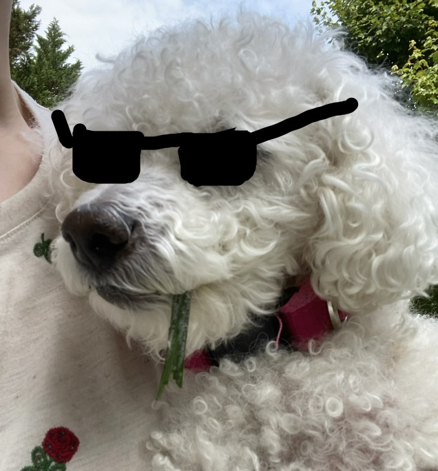
 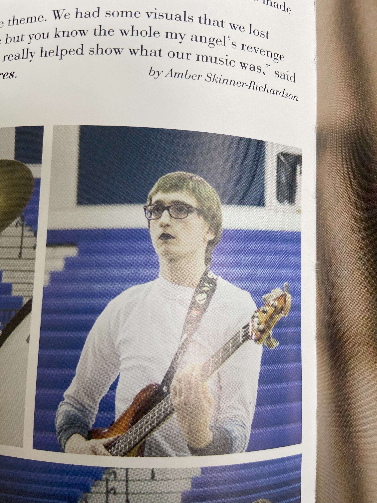
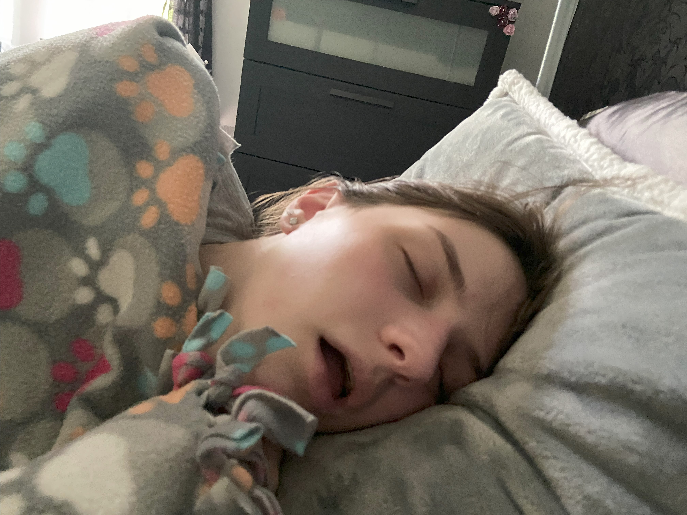
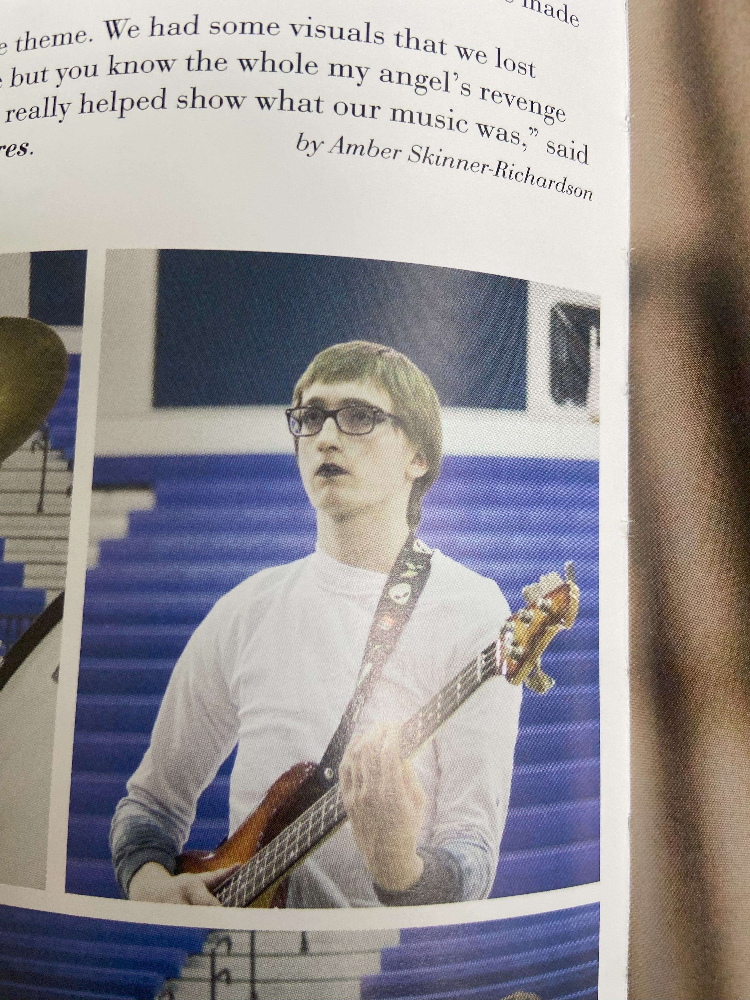
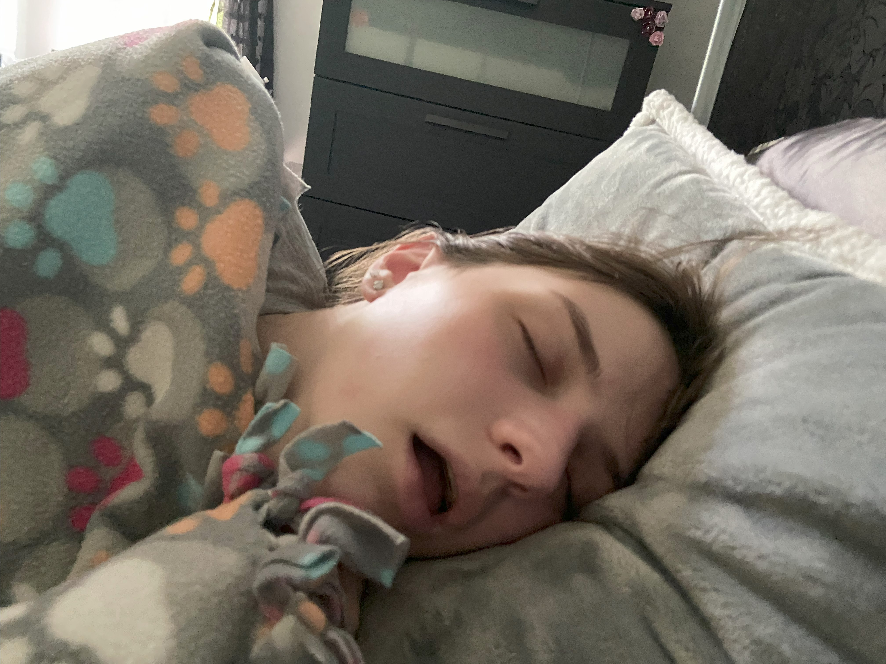
 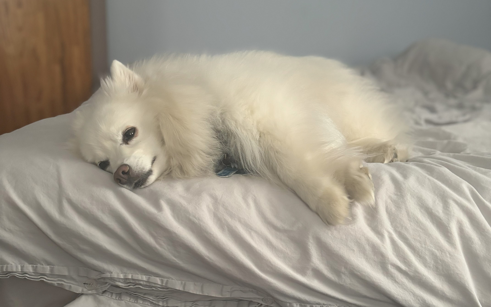
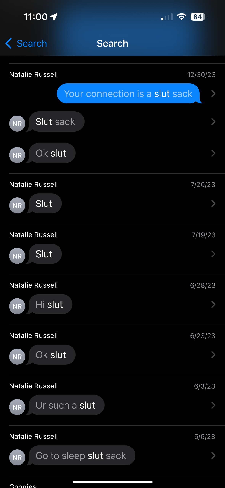
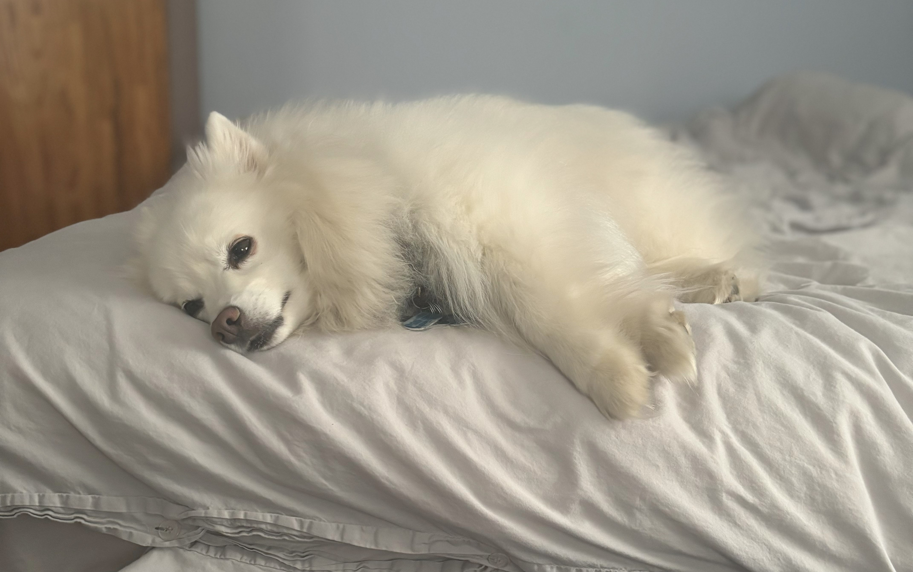
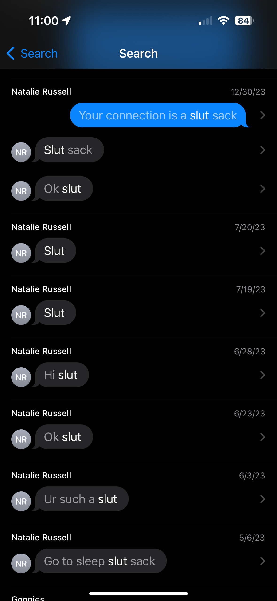